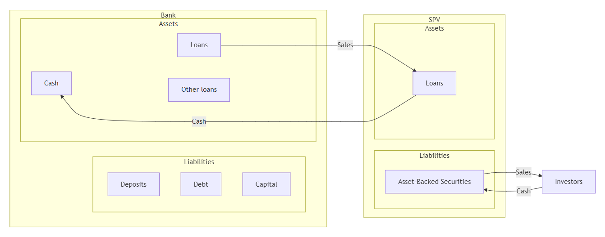
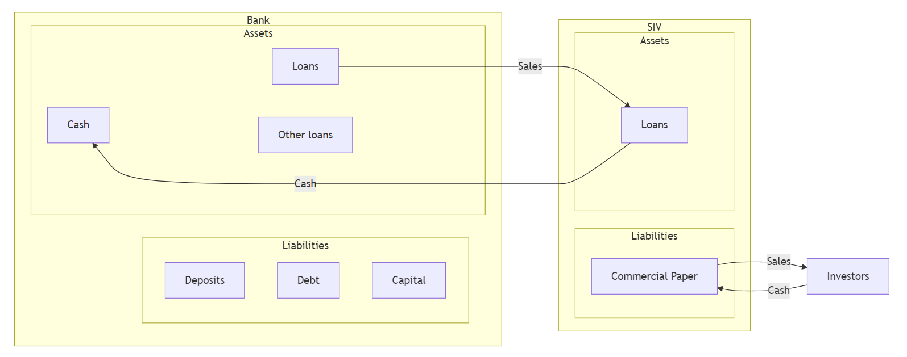

Banking and Financial Intermediation
Department of Applied Finance
2026-05-19
For most of the 20th century, banking followed a simple model: originate-to-hold. A bank made a loan, kept it on its books, and collected interest until maturity. The bank’s fate was tied to its borrowers.
Today, that model is largely dead. Banks now operate under the originate-to-distribute model:
Note
This shift is not innocent. The originate-to-distribute model fuelled the 2008 global financial crisis — once banks no longer held the loans they originated, their incentive to screen borrowers collapsed. Subprime mortgages were originated, securitised, sold, and the risk landed everywhere except on the originator’s balance sheet.
This week we examine the two mechanisms that made this transformation possible:
Both enhance liquidity, free up capital, and provide funding. Both have also, at various points, broken the financial system.
Central to bank risk management is credit risk, as discussed in Week 6 and Week 7.
Traditionally, banks adopt several mechanisms to manage credit risk:
In addition, FIs can use derivatives (e.g., forward, options, swaps) to manage their credit risk.
However, FIs now increasingly use loan sales and securitisation to control credit risk — and they do so on a massive scale.
A market hiding in plain sight
The U.S. secondary loan trading market has grown to around US$800 billion in annual trading volume in recent years, according to the Loan Syndications and Trading Association (LSTA). This market barely existed in 1990.
Traditional short-term loan sales
Leveraged loan sales
Note
The definition of “leveraged loan” is ambiguous: some use spreads (e.g., +125 bps over the benchmark) and others use rating criteria (e.g., BB- or lower).
Note
Leveraged loans can be:
Two basic forms by which loans can be transferred from seller to buyer.
Participation
Assignment
Why does this distinction matter?
If the selling FI goes bankrupt, a participation buyer is just another unsecured creditor of that FI. An assignment buyer still owns the loan. Lehman Brothers (2008) held large participation interests in syndicated loans — when Lehman failed, many participants discovered their claims were stuck in bankruptcy court alongside everyone else’s.
Buyers
Sellers
UKAR — UK Asset Resolution (2010–2021)
After the U.K. nationalised Northern Rock (2008) and Bradford & Bingley (2008), HM Treasury folded their toxic mortgage books into UKAR in 2010. At its peak, UKAR managed roughly £116 billion of distressed mortgages — making it temporarily one of the largest mortgage holders in the U.K.
UKAR’s job was not to lend, but to sell. It auctioned loan portfolios to private investors over a decade — e.g., Cerberus Capital Management paid roughly £13 billion in 2015 for a chunk of the Northern Rock book. By the time UKAR was wound up in 2021, taxpayers had recovered most of the original £48 billion bailout.
Citi Holdings (2009–2015)
In January 2009, Citigroup carved out its problem assets into Citi Holdings — a “bad bank” inside the parent company holding roughly US$800 billion of non-core assets: U.S. subprime mortgages, consumer finance businesses, Smith Barney brokerage, and a long tail of structured-credit positions.
Over six years, Citi Holdings sold these assets into the secondary loan market and to private-equity / hedge-fund buyers — shrinking the book by more than 90% before being absorbed back into Citigroup’s core operations in 2015. It is the canonical example of a bank using a good bank-bad bank split to clean up without requiring a separate legal entity or government takeover.
Why both ended up as massive sellers
A “bad bank” is, by design, the largest seller in a distressed loan market. It has no relationship to preserve with the borrower, no need to roll loans forward, and a political or commercial mandate to wind down quickly. This makes them ideal counterparties for the vulture funds, hedge funds, and PE firms listed on the buyers side of this slide.
Apart from credit risk management, there are several reasons FIs sell loans:
The capital arbitrage angle
Under Basel III, a B-rated leveraged loan attracts a much higher risk weight than an AAA tranche of a CLO that holds the same loan. So a bank can originate a loan, sell it into a CLO, then buy back the AAA tranche — and end up holding the same credit exposure at a fraction of the capital cost. This is exactly the kind of regulatory arbitrage that Irani et al. (2021) documents.
Asset securitisation is another mechanism to manage credit risk, interest rate risk, liquidity and more.
The mechanism in three steps:
Why the off-balance-sheet structure?
The whole point of using a separate SPV/SIV is bankruptcy remoteness: if the originating bank fails, the assets inside the SPV are not part of the bank’s bankruptcy estate. Investors in the ABS keep getting paid. This is also why off-balance-sheet treatment historically allowed banks to not hold regulatory capital against these exposures — a loophole that Enron exploited spectacularly in 2001, and that Basel III tightened after 2008.
Note
The underlying loans belong to the ultimate investors in these ABS — not to the bank, and not to the SPV.

The Traditional Securitization Process Using a Special-Purpose Vehicle
Note
The underlying loans belong to the SIV.
The SIV acts like a traditional bank: it holds loans until maturity and issues short-term debt instruments.
The SIV crisis of 2007
In summer 2007, investors lost confidence in the value of subprime-backed assets held by SIVs. Asset-backed commercial paper buyers refused to roll over their lending. The SIVs could not sell their long-term assets fast enough to repay short-term debt — a classic bank run, just without any actual deposits. Citigroup alone had to bring roughly US$58 billion of SIV assets back onto its balance sheet in December 2007. The entire SIV sector essentially ceased to exist by 2009.

Securitization Process Using a Structured Investment Vehicle
The major forms of asset securitisation are:
Pass-through securities “pass through” payments by underlying borrowers (e.g., households repaying mortgages) to secondary-market investors holding an interest in the mortgage pool.
Note
Pass-throughs are the primary mechanism for securitisation. The U.S. agency MBS market — issued by Fannie Mae, Freddie Mac, and Ginnie Mae — exceeds US$9 trillion outstanding, making it the second-largest fixed-income market in the world after U.S. Treasuries.
CMOs are a second and still-growing securitisation mechanism.
The waterfall logic
Think of the CMO as a pyramid of buckets. Cash flowing in from borrowers fills the top bucket (the senior tranche) first. Only when the top bucket overflows does the next tranche down get paid. Losses, conversely, hit from the bottom up — the equity tranche absorbs the first defaults. This is the same logic that powers CDOs, CLOs, and almost every structured-credit product.
| CMO tranche | Principal payment priority | Prepayment exposure / protection | Expected average life | Typical buyers |
|---|---|---|---|---|
| Class A | Paid first | Highest prepayment exposure; minimum protection | Shortest | Depository institutions, banks, thrifts |
| Class B | Paid after Class A is retired | Some prepayment protection | Medium; often around 5–7 years | Pension funds, life insurance companies |
| Class C | Paid after Class B is retired | Greatest prepayment protection among A/B/C | Longest | Insurance companies and pension funds seeking long-duration assets to match long-duration liabilities |
MBBs (and the closely related covered bonds common in Europe and Australia) are the third securitisation vehicle.
They differ from pass-throughs and CMOs in two main aspects:
Note
Underlying mortgages are more of collateral for the MBBs — the bond pays a fixed coupon regardless of what the mortgages do, as long as the issuer is solvent.
An Australian angle
Australian banks are major issuers of covered bonds — APRA allows ADIs to issue covered bonds backed by a segregated pool of high-quality mortgages, capped at 8% of Australian assets. Combined with the Committed Liquidity Facility’s wind-down (completed in 2023), covered bonds have become a core funding tool for the Big Four.
The process involved:
However, MBBs are less appealing to FIs for several reasons:
Hidden subsidy: covered bonds vs. deposit insurance
FIs issuing MBBs can gain at the cost of taxpayers’ money through the deposit insurance system. Let’s see how.
Consider an FI with $20 million in long-term mortgages as assets, financed with $10 million in short-term uninsured deposits and $10 million in insured deposits.
| Assets | Liabilities | ||
|---|---|---|---|
| Long-term mortgages | $20 | Insured deposits | $10 |
| Uninsured deposits | $10 | ||
| $20 | $20 |
To lower the duration gap and funding cost, the FI may choose securitisation via an MBB issue.
| Assets | Liabilities | ||
|---|---|---|---|
| Collateral (market value of segregated mortgages) | $12 | MBB issue | $10 |
| Other mortgages | 8 | Insured deposits | $10 |
| $20 | $20 |
Important
The $10 million in insured deposits is now backed only by $8 million in unpledged assets! If the FI fails, MBB holders are paid first (their $12 million collateral is ring-fenced). The deposit insurer is left footing the bill for the shortfall. The taxpayer subsidises the spread the bank just pocketed. This is the asset encumbrance problem that has made regulators wary of how much covered bond issuance to permit.
The major use of the three securitisation vehicles (pass-throughs, CMOs, and MBBs) is packaging fixed-rate mortgages. But securitisation can also be applied to other assets:
The market that won’t quit
Regulators have warned about leveraged loans for nearly a decade. The market kept growing anyway.
Did the CLO market blow up in 2020?
Despite a sharp Q1 2020 sell-off when COVID-19 hit, CLOs survived remarkably well — defaults peaked far below the doomsday scenarios sketched by 2018–2019 warnings, partly because the Fed’s emergency facilities supported credit broadly. Whether that signals genuine resilience or just one rescue away from the next crisis is one of the open questions in current banking research.
AFIN8003 Banking and Financial Intermediation